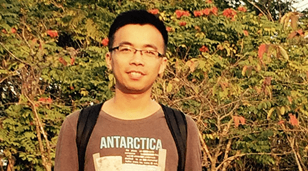
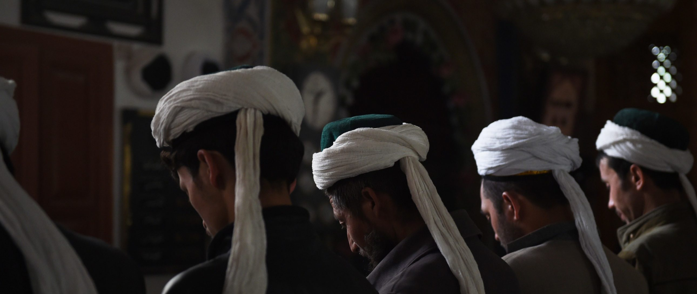

跳转到主要内容
2019年度报告
我们是谁
我们的工作
如何参与
网络联署
加入我们
人权公开课
最新消息
搜索
搜索字段
搜索
立即行动
主菜单
2019年度报告
我们是谁
我们的工作
如何参与
展开 如何参与 子列表
网络联署
加入我们
人权公开课
最新消息
立即行动
Human rights lawyer Nasrin Sotoudeh photographed in the garden of her office. Photo by Kaveh Kazemi/Getty Images)
主题
内容类别
区域/国家
上一个
下一个
58 结果
排序方式
最近
按最早优先
标题 - 提升
标题 - 降序
新闻
02/08/19
从非洲的森林到中国的客厅，红木家具的灰色之旅
新闻
01/08/19
香港以暴动罪起诉44人，似旨在阻吓市民未来参与游行示威

新闻
29/07/19
中国：劳工权利活动人士杨郑君被关押多月，无法与外界联系
新闻
12/07/19
1413天未完待续：李文足的抗争之路
中国
04/06/19
永不后悔：六四通缉令上的两个人生故事
新闻
04/06/19
三十年以后，中国深陷网上镇压、监控与审查泥潭
新闻
31/05/19
六四30周年前夕，中国加强打压活动人士
中国
21/05/19
8张猫咪图，为你讲述中国跨性别者的故事
中国
14/05/19
宁冒生命危险自行手术，也不愿活在谎言中：三个中国跨性别者的故事
新闻
10/05/19
中国：跨性别者冒着生命危险自行做高风险手术

新闻
09/05/19
斋月在新疆：“原谅我的孩子不斋戒”
中国
23/04/19
中国：维吾尔人在恐惧中寻找失踪家人
上一个
1
…
3
4
5
下一个